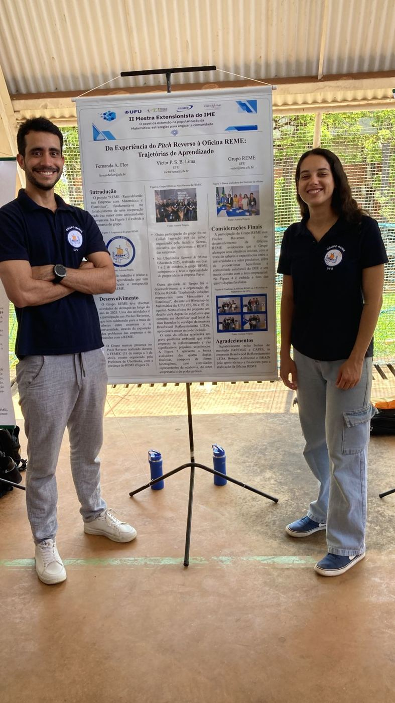
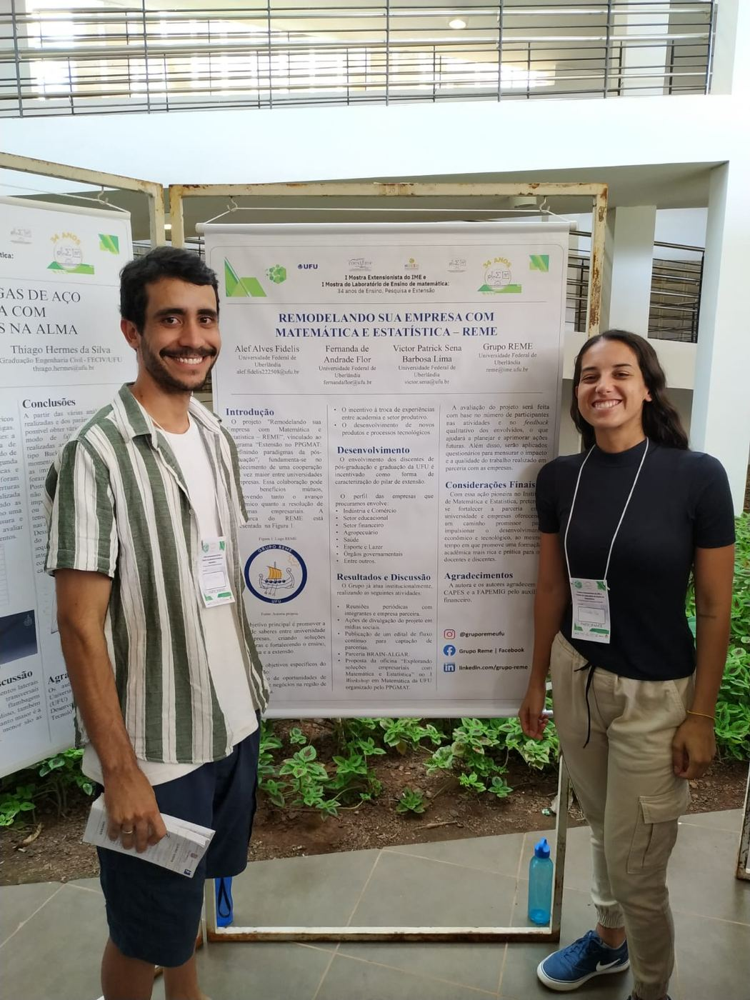

Trabalhos e eventos
Pôsteres e textos sobre o projeto e a participação do REME em eventos de inovação, empreendedorismo e extensão em Uberlândia.
Pôsteres
-

2025Da experiência do Pitch Reverso à Oficina REME: trajetórias de aprendizado
Relata o que a equipe aprendeu ao participar de rodadas de Pitch Reverso com empresas e ao organizar a primeira Oficina REME.
Ver pôster (PDF) -

2024Remodelando sua Empresa com Matemática e Estatística
Apresenta o projeto e a proposta de cooperação entre a universidade e as empresas da região.
Ver pôster (PDF)
Na imprensa e em parceiros
Eventos
O REME participa de feiras e encontros de inovação para conhecer empresas e apresentar o projeto.
FEMEC 2025. FEMEC 2025. Collab Inovação 2025. Collab Inovação 2025. Uberlândia Summit. II Mostra Extensionista do IME.